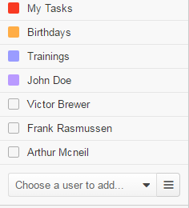

My Calendar¶

Actions¶
Click the Tasks button to open the list of all tasks.
Click the Events button to open the list of all calendar Events.
Calendars List¶
This section enables you to add or remove calendars that you watch. By default, it contains the My Tasks calendar that shows your tasks by their due dates, all existing system calendars, and your personal calendar.
Each calendar has its color. By default, events from this calendar will appear in this color. The color legend box is displayed in front of the calendar name. You can change a calendar color. For how to do this, see Change Calendar Color
Add a Calendar of Another User¶
To start watching calendars of other users, select a user from the Choose a user to add list. You can use the search field to quickly find the required user: start entering their name and click the required name from the dynamically filtered suggestions. You can also click the hamburger menu next to the list to select the required user in the dialog box using filters, etc.
Show / Hide a Calendar¶
Click a calendar that is already added to your list to show or hide it in the calendar grid.
Alternatively, complete the following:
- Hover over the calendar name.
- Click the ellipsis menu that appears at the end of the corresponding row, and then click Show calendar / Hide calendar.
Hidden calendars color legend box changes to transparent.
Hidden calendars do not appear in the right part of the page and in the Today’s Calendar widget.
Remove a Calendar¶
If you want to temporary hide events from a certain calendar, see Show / Hide Calendar.
If you are sure that you do not want to watch this calendar at all, you can remove it from your calendar list.
Important
You can remove only calendars that you added to the list, i.e. calendars of other users. You cannot remove the My Tasks calendar, system calendars, and your personal calendar.
- Hover over the calendar name.
- Click the ellipsis menu that appears at the end of the corresponding row, and then click Remove calendar.
Change a Calendar Color¶
System calendars have default colors defined by the person that manages it. For each user calendar that you adds the next color from the list of available colors is automatically assigned.
For every calendar, you can change a calendar color:
- Hover over the calendar name.
- Click the ellipsis menu that appears at the end of the corresponding row. Then click the desired color box or the Edit color link to choose a custom color using a color wheel.
Important
The list of available colors is specified in the system configuration. Please contact your administrator if you want to change it.
Calendar¶
At the top you can see the following elements:
- A pager that enables you to navigate through periods.
- The period description.
- The buttons that enable you to set how the calendar displays events. Available options per month, per week, or per day.
Events in the calendar take cells that reflect the time when an event starts and its duration.
An icon in the upper-left corner of the event cell represents the invitation status depending on whether the invitation has been accepted:
- Not Responded—This is a basic status of the invitation. It appears in the following cases:
- You have not given any response to the invitation.
- You are an event owner and are not required to respond.
- Accepted—You have agreed to attend an event (you have responded Yes to an event invitation).
- Tentatively Accepted—You are not sure whether you are going to visit an event (you have responded Maybe to an event invitation).
- There will be no icon in the following cases:
- You are not going to attend an event and have declined the invitation (you have responded No to an event invitation).
- This is the event from the system calendar.
- The calendar record represents a task.
The Reminder icon in the upper-left corner appears when the event owner configured sending reminders about the event.
From the calendar you can add, view a calendar event, respond to it, edit and delete it, start a hangout meeting, remove a context from a calendar event.
See the action descriptions: